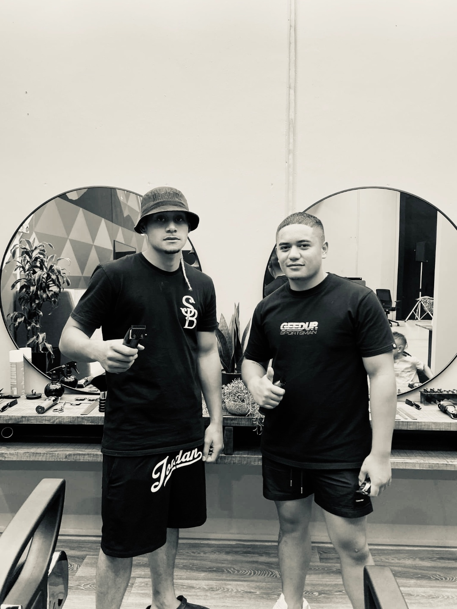
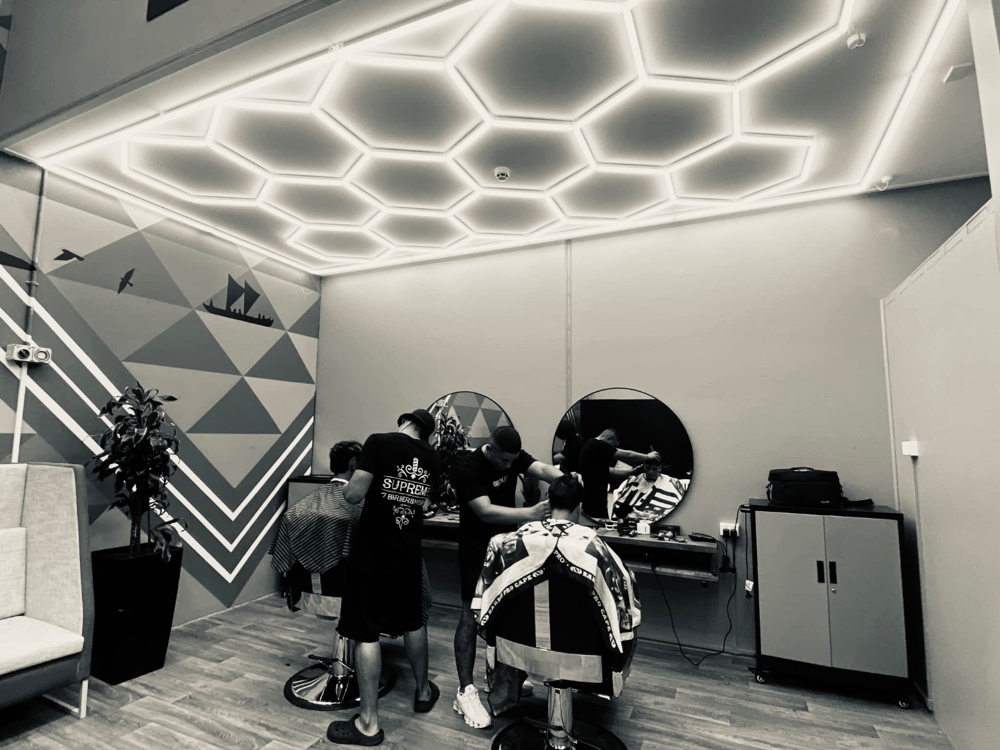
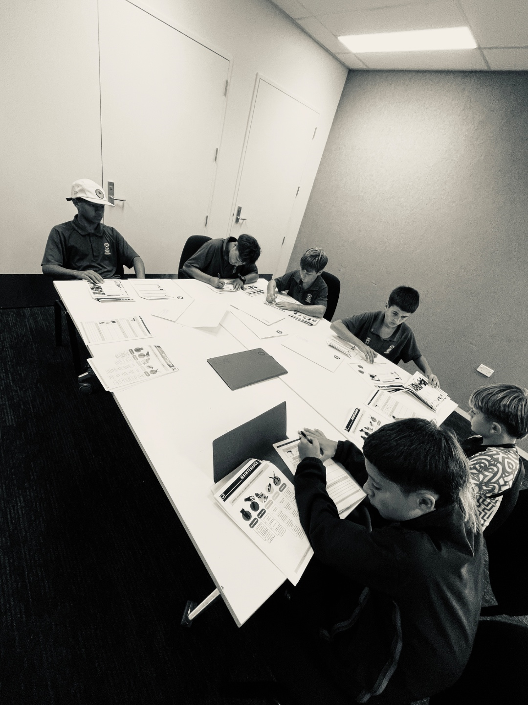
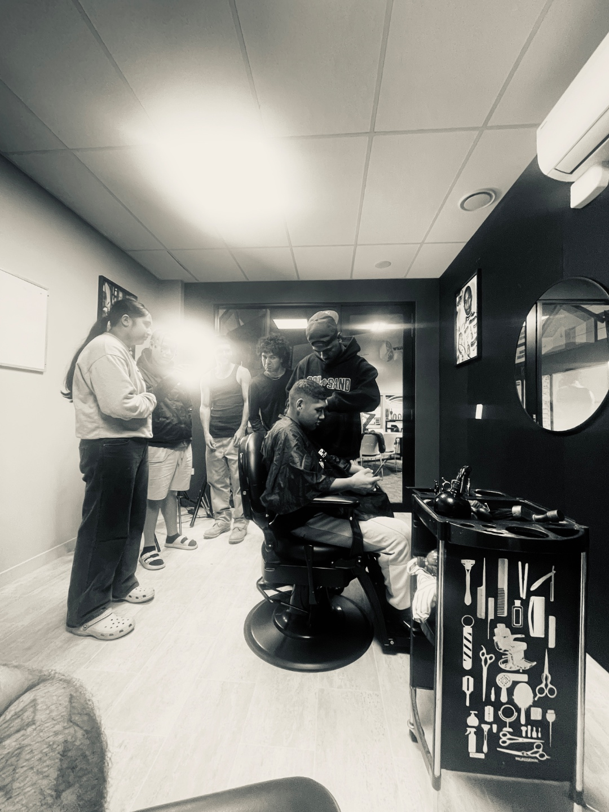
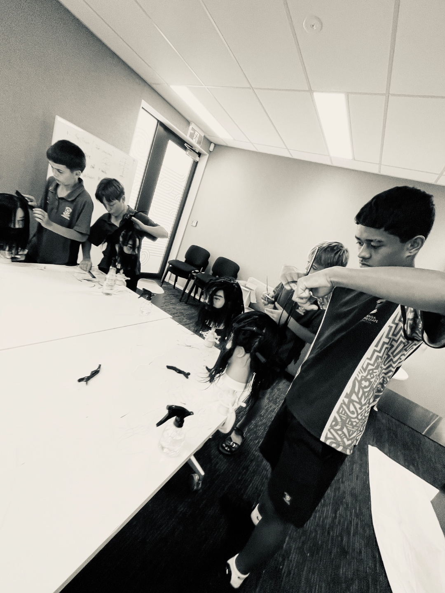
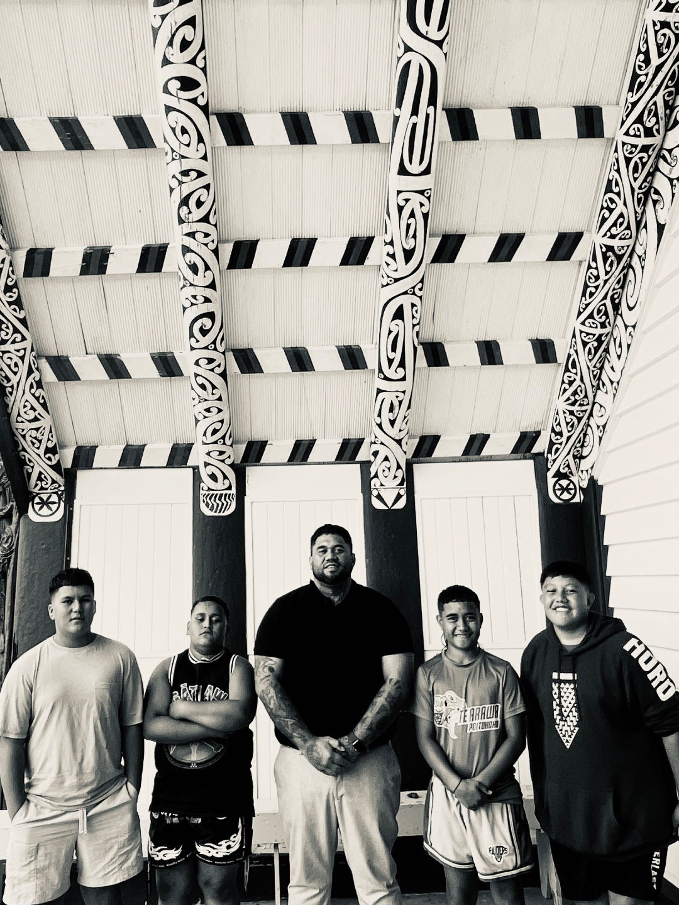
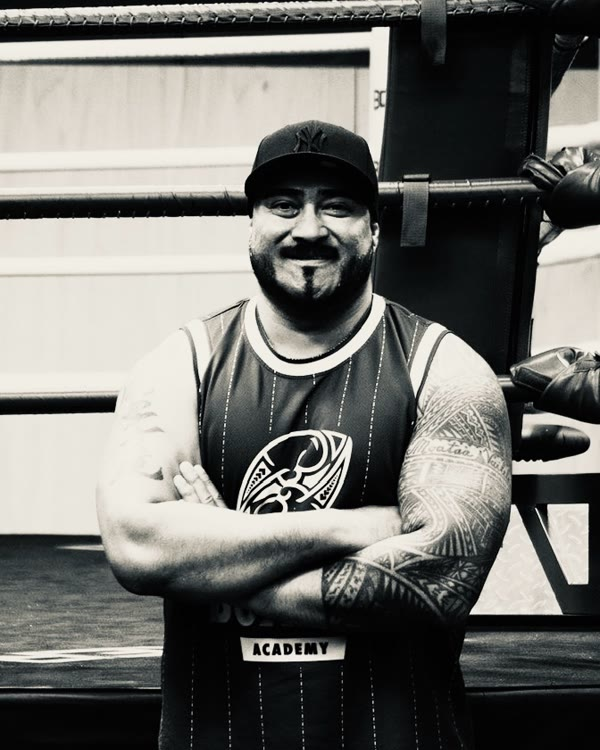
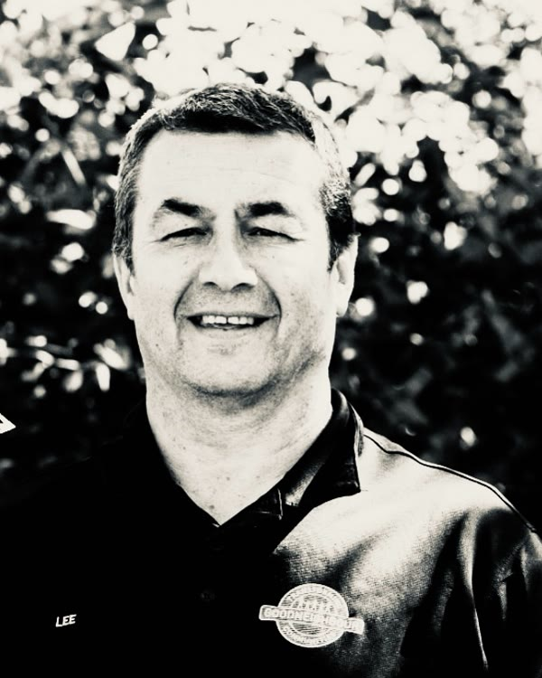
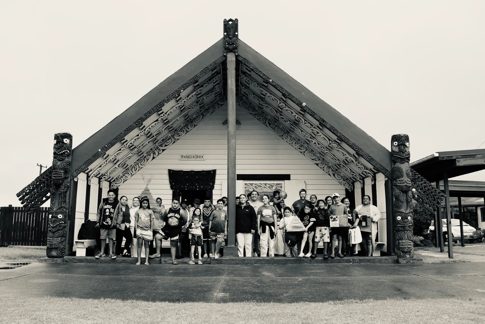

A real trade
Twelve modules of practical barbering, from first scissor control to precision fades and client ready work.
Self Care & Hauora · Tauranga, Aotearoa
Tūranga Aiga empowers rangatahi through the barber's chair, pairing a real trade with hauora, identity and belonging. A pathway from the classroom to a career, grounded in Te Ao Māori.

Every young person carries potential. We help it take root through skill, wellbeing and whanaungatanga.
Ko wai mātou · Who we are
Tūranga Aiga is a charitable trust based in Tauranga Moana. We deliver a hands on Self Care & Hauora programme through the barber's chair, teaching young people a genuine trade while nurturing their hauora, confidence and sense of belonging.
Our name means the standing place of the family. For the rangatahi we work with, the barber's chair becomes exactly that: a place of care, kōrero and mana. Rooted in our values, we meet young people where they are and walk alongside them toward work, study or apprenticeship.



Twelve modules of practical barbering, from first scissor control to precision fades and client ready work.
Built on Te Whare Tapa Whā: tinana, hinengaro, whānau and wairua woven through every day.
Whakawhanaungatanga, tuakana teina and the Pasifika vā, the sacred space between us, create a safe place to grow.
Career planning, financial literacy and tautua, service to family and community, that lead to work, study or apprenticeship.
Grounded in Māori and Pasifika values
Te hōtaka · The programme
A structured 12 module journey delivered over the school year. Each day runs 9:30am to 3:00pm and blends practical cutting on the tools with wellbeing, reflection and real community service, closing with a public showcase and certificates.



Ngā reo · In their words

“Grateful for the vision Shanon provided.”
Kobe

“My strength is my confidence now.”
Carter
Ngā aratohu · The 12 modules
From building trust on day one to celebrating achievement with whānau at the showcase, every module weaves craft and care.
Te take · Why it matters
of Bay of Plenty children and young people aged 0 to 20 are Māori, and our programme is designed to serve them.
Aroturuki Tamarikiof young Māori are not in employment, education or training, a gap our programme is built to close.
MSD researchrangatahi supported through earlier self care and hauora delivery in our community, the foundation we build on.
Community delivery, 2023of rangatahi who start with us complete the course, walking away with a real skill and their own barber kit.
Tūranga Aiga programme dataWe're grounded in our values, but our doors are open to all. Tūranga Aiga welcomes rangatahi of every culture, background and ethnicity. Diversity is our strength, and the chair is a place where every young person belongs.
“The chair is more than a cut. It's where a young person is seen, heard and reminded that they matter.”
Tūranga Aiga kaupapa
Ngā hoa mahi · Our partners
Tūranga Aiga works alongside trusted community organisations who share our commitment to rangatahi wellbeing.
Our home base and delivery venue in Tauranga.
Connecting rangatahi through sport, movement and mentoring.
Māori health and wellbeing partner across the western Bay of Plenty.
Backing the kaupapa from the very beginning, supporting our rangatahi and this mahi every step of the way.
Supporting accreditation and vocational pathways.
Ngā kaitiaki · Our trustees
Tūranga Aiga is guided by a board of trustees who bring deep experience in governance, education, community and service. Together they hold the vision and make sure our rangatahi are supported to thrive.
Chair
Brings strong, steady governance to the board, guiding Tūranga Aiga with clear direction and sound leadership so the trust stays true to its kaupapa.
Trustee
Leads quality services and policies at Toi Ohomai and carries more than 30 years of barbering experience, grounding the trust in both education standards and the trade itself.

Trustee
A NZ Warriors legend and head boxing coach at the Bay of Plenty Youth Development Trust, mentoring rangatahi through sport, discipline and self belief.

Trustee
Head tutor at Good Neighbour, known for absolute righteousness in character. A steady, principled presence who models integrity for every rangatahi.
Trustee
Experienced with the Secondary Schools Commission and a retired lawyer and judge, bringing legal wisdom, fairness and a lifetime of service to the board.
Secretary
Brings years of experience building strategies and processes, with 30 years of business consulting behind him, keeping the trust organised, focused and well run.
Tautoko mai · Support the kaupapa
Every dollar goes directly into equipping and supporting rangatahi. Our programme is 100% free to participants, and funders and sponsors make that possible. Choose a level that suits you, or talk to us about a tailored partnership.
Gift a kit
$889
Fund a full professional barber kit for one rangatahi, theirs to keep and build a career with.
Sponsor a rangatahi
$3,900
Carry one young person through the full 12 module journey: kit, kai, materials and NZQA accreditation.
Sponsor a course
$23,180
Back an entire cohort of rangatahi through one complete course, from first cut to graduation showcase.
Any amount
Koha
Every contribution helps, going toward kai, materials, transport and the wellbeing support woven through each day.
Get in touch and we'll share our donation details, funding proposal and reporting, whatever your process needs.
Tūranga Aiga is a registered charitable trust based in Tauranga. A full programme budget and funding proposal are available on request.
Mō ngā rangatahi · For our young people
Our courses are free and open to rangatahi aged 15 to 24 in the Tauranga area. No experience needed, just a willingness to show up and give it a go. You can sign yourself up, or a parent, whānau member or support worker can reach out on your behalf.
Email or call us, or send a DM on Instagram. Tell us a little about yourself.
We'll meet you kanohi ki te kanohi, answer your questions and check the next start date.
Turn up on day one. We'll sort your barber kit and welcome you into the crew.
Mō ngā whānau · For families
Nothing. The programme is 100% free, including the barber kit your rangatahi keeps.
Rangatahi aged 15 to 24 in the Tauranga area. No experience or NCEA credits needed, just a willingness to show up.
In Tauranga Moana, weekdays from 9:30am to 3:00pm across a 12 module course. We'll confirm the venue and next start date when you get in touch.
No. Alongside the trade, we weave in hauora, identity and belonging, grounded in Māori and Pasifika values, so your rangatahi grows as a whole person.
Yes. It's a pathway toward further training, apprenticeships and work. We connect rangatahi with our partners and support them into their next step.
Email us on their behalf, or encourage them to reach out themselves. We'll meet you kanohi ki te kanohi and answer any pātai you have.
Tūranga Aiga is led by Shanon Ratahi, a master barber, educator and community mentor with more than 15 years of experience across barbering and trades. Shanon previously tutored barbering at Toi Ohomai Institute of Technology, then stepped out to build kaupapa designed specifically for rangatahi, using the barber's chair as a classroom for life. He has designed and delivered barbering and hauora programmes across the Bay of Plenty, mentoring young people toward NCEA credits, real qualifications and genuine career pathways. Grounded in tuakana–teina and a deep commitment to whānau, Shanon walks alongside every rangatahi, blending a real trade with confidence, identity and belonging.
Whakapā mai · Get involved
Whether you're a funder, an employer offering apprenticeships, a community partner or a whānau wanting a place for your rangatahi, we'd love to kōrero.
